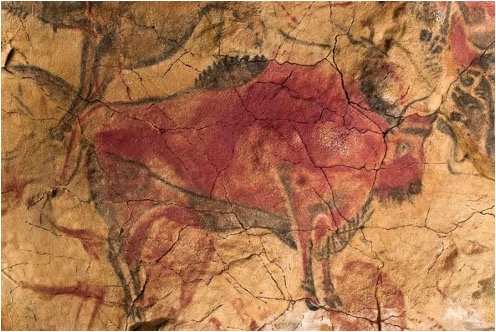
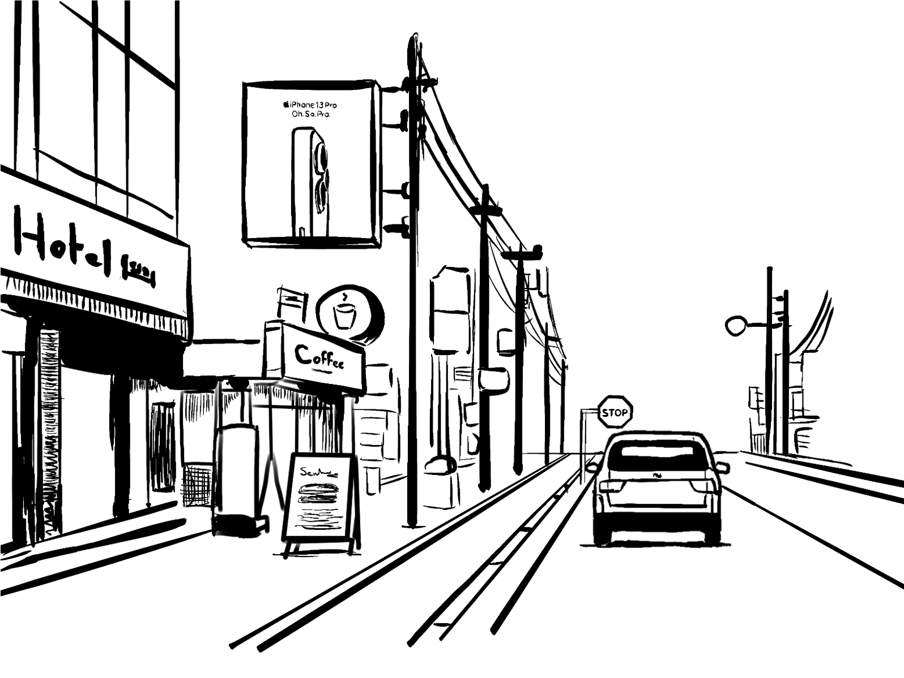
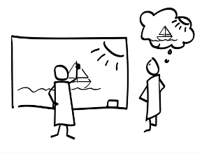
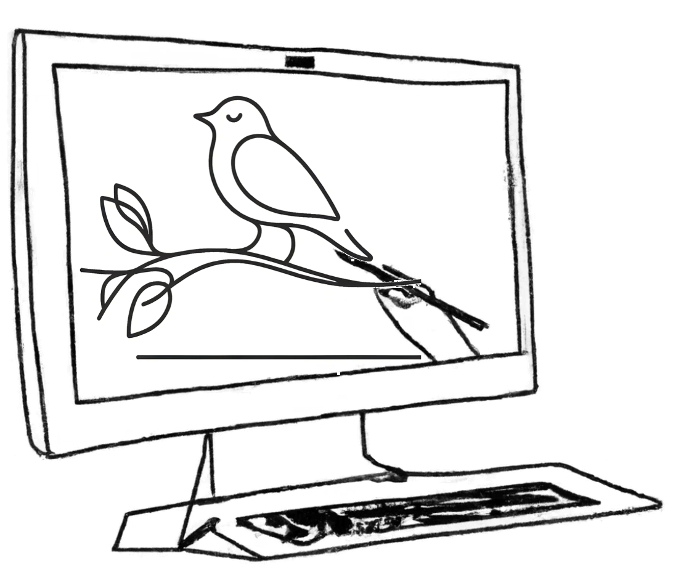

Visual communication is the use of visual elements to convey ideas and information. It is a vital aspect of human interaction, and traces back to prehistoric cave paintings.

In modern life, our world is full of visual stimuli, and visual communication elements are all around us!

Visual communication can be more effective than written or verbal communication in many cases, and here is why:
- Conveys complex ideas quickly
- Crosses language barriers
- Enhances memory retention
- Evokes emotions
- Simplifies complex concepts
- Stimulates creativity
What makes visual communication challenging?
Creating effective visual communication designs requires creativity, design skills, understanding of social contexts, storytelling, emotional intelligence, and the ability to distill complex information into clear, compelling visuals.
While computers can assist in visual communication, they still lack many of these abilities!

My Research

In my research, I explore various ways to leverage the extensive priors of pretrained vision-language models (VLMs) to automatically produce effective visual communication designs. I investigate different aspects of visual communication and introduce new generative tasks within these domains.
>
The long-term vision is to use such systems to:
- Support designers – ideation, inspiration, communication.
- Enhance the way we communicate and exchange ideas:
- With each other
- With computers